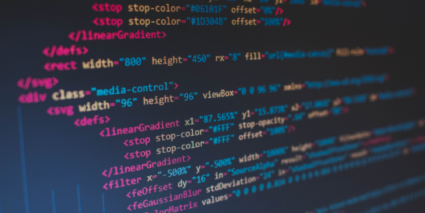

About Me
Key Skills
UX
- User research (interviews, surveys etc)
- Competitor Research
- Affinity diagrams, empathy maps, user personas, user journey maps, user scenarios etc.
- User insight statements, problem statements etc.
- Ideation and feature prioritization
- Accessibility
- Wireframing
- Prototyping
- Usability testing
- Kanban boards and agile practices
UI
- Style Guides
- Column and grid systems
- Interaction states for buttons, cards, navigational elements etc.
- Typography
- Colour systems
- Accessibility guidelines
- Adobe XD
- Figma
Programming
- HTML
- CSS3
- Bootstrap 4
- Java Script/jQuery
- RWD
- Atomic Design
- Debugging
- Templates, layouts and pages
- Web prototyping
- UI Testing and A/B testing
UX Design Process
The UX/UI course I’ve just completed has been invaluable in providing both theoretical knowledge and a wealth practical experience in every stage of the design process. It has been an intense learning process and I know I still have a lot to learn about this field. In reflecting on some of the work my classmates and I have done during the course, I realised how important it is to never rush to come up with a solution without doing due diligence to the research phase. We have to keep an open mind and keep asking questions to uncover the real issues, otherwise the solutions we come up with may not really help people. In a redesign project, this could result in the best/most functional parts of the original product being lost and the real problems potentially remaining unsolved.
Here are some practices I hope to follow in future design projects:
- For redesign projects, begin by truly understanding the original product and underlying structure. If it’s a website, read every page (or at least at the top few levels of hierarchy if it is a big one). Learn from the stakeholders what is working and not working, interview real users about what they like and dislike about the product. Conduct market research thoughtfully.
- For new design projects, conduct usability testing and user interviews with users of competing or related products, and conduct thorough research in all possible avenues to fully understand the problem space.
- For redesign projects, carefully analyse the product against usability and accessibility heuristics and conduct user testing to confirm the findings of heuristic evaluations and potentially uncover other issues. Ideally do usability testing with people who have disabilities to combine usability and accessibility.
- Include all of the research when weighing the options of what needs to change (not just what one part of the research indicates). Research possible solutions by staying on top of how others are solving similar problems and what standards are emerging.
- Use UX tools like personas, journey-maps, user flows etc. to the extent that they are helpful for answering the questions we have about a problem. Perhaps we even need to imagine new UX tools for the specifics of a project.
- Conduct the same (or appropriately similar) usability and accessibility testing on the new design as was done on the original design (or competitors in the case of a new design) so that we can be sure it’s really solving the problems identified, ideally with real users of the product.
- At the end of a redesign process, apply the same standard of rigor in analysing the proposed redesign as was used when critiqueing the original design. Does the new design meet accessibility and usability guidelines? Is it meeting the identified needs of users? Often, time constraints and scope don’t allow for all the issues to be addressed, but at least the major ones should be prioritized. Some issues may have been deprioritized because they do not affect many users, but if that issue is still a big issue for a subset of users, there should at least be a plan for how that issue can be eventually addressed. Otherwise, products risk never being truly inclusive.
Inclusivity

Inclusivity means including people of diverse abilities in the design and testing phases of a project. Just ticking accessibility guideline boxes doesn’t always result in true inclusivity. I question the practice of using user personas as they could work against inclusion - personas encourage the designer to empathize especially with a certain “target user” and their needs, sometimes at the expense of those with unique needs. This can sometimes be necessary to avoid scope creep, but when it happens all the time, the net effect is that people with disabilities could become further marginalized.
User Interface Design
Good interface design can be built on a solid foundation of user experience design. No amount of pretty colours and graphics can fix a poor user flow. Nevertheless, I see the power of a well-executed and attractive UI. And, it’s a process I enjoy. In highschool, I studied Art and enjoyed painting. Creating high-fidelity designs in Figma and Adobe XD can sometimes give the feeling of creating art. It’s a pleasant mix of technical skill and creativity.
Development
UX/UI Designers typically work with software developers to implement their designs. The UX/UI course I completed included a coding section which was a rapid, but broad exposure to pure HTML, CSS, Java Script including responsive tools like flexbox and CSS grids, CSS animations plus jQuery and Bootstrap. We used these skills to create this portfolio website. Coding my own designs has deepened my understanding of UI design, making it easier to communicate with developers. Plus, if the project is not too complex, I feel confident to implement my own designs.
My Journey to Design
I studied Arts and Education at the University of Western Australia. I majored in French for my Arts degree and spent a year working and studying in Paris. After graduating, I wasn’t ready to settle down yet and decided to spend more time overseas. I volunteered for two years at the Baha’i World Centre in Israel working on organising correspondence. I worked with several complex customer software programmes, learned them well and soon led a team and mentored others in their use. These programmes had been in use for many years and were poorly designed. I participated in a project to re-design one and I liked the role I played as a subject matter expert - I even considered becoming a business analyst.
Later my husband and I moved to Sarajevo in Bosnia and Herzegovina where we volunteered in a community development project for children and youth for three years. After having our first child, we moved back to Australia, but moved several times within Australia and even had a stint in New Zealand. We had two more kids along the way and finally settled in Adelaide, where we’ve been for the past two years.
Naturally, I have been focusing on raising our three little ones, but in the last couple of years, as my youngest is getting to be a preschooler, I have been wondering about what career to pursue. My husband who is a software developer encouraged me to consider design, since he saw how passionate I was back in Israel to improve the software we worked on. He also knew my attention to detail and ability to think deeply and critically analyse things would come in handy in this profession. As I got into the course, it has really felt like a natural fit. I’ve enjoyed learning about the design process, about what makes a good user interface, about how to produce beautiful designs in Figma and Adobe XD and most recently how to bring my designs to fruition through coding. I wish I had known about this career back when I was leaving high school, but perhaps I needed all that life experience to get to where I am now.